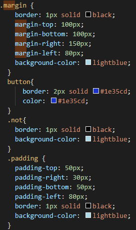

<div class="main-content">
  <div class="container-fluid">
    <div class="card">
        <div class="card-header card-header-danger">
            <h4 class="card-title">CSS Margin V/S Padding</h4>
            
        </div>
        <div class="card-body">
          
          <mat-tab-group>
            <mat-tab label="Info"> 
              <br>
              <br>
              <mat-grid-list cols="2" rowHeight="200px">
                <mat-grid-tile>
                 <h3> CSS Margins</h3>
                 <p>
                  The CSS margin properties are used to create space around elements, outside of any defined borders.
              
                    With CSS, you have full control over the margins. There are properties for setting the margin for each side of an element (top, right, bottom, and left).</p>
                </mat-grid-tile>
                <mat-grid-tile>
                  <h3>CSS Padding</h3>
                 <p> The CSS padding properties are used to generate space around an element's content, inside of any defined borders.
              
                    With CSS, you have full control over the padding. There are properties for setting the padding for each side of an element (top, right, bottom, and left).</p>
               
                </mat-grid-tile>
               
              </mat-grid-list>

            
            </mat-tab>
            <mat-tab label="Output"> 
         
         
              <mat-grid-list cols="4" rowHeight="2:1">
                <mat-grid-tile>
                  <button mat-raised-button (click)="notf()">Nothing</button>
                </mat-grid-tile>
                <mat-grid-tile>
              <button mat-raised-button (click)="margin()">with Margins</button>
              </mat-grid-tile>
              <mat-grid-tile>
              <button mat-raised-button (click)="pad()">with padding</button>
            </mat-grid-tile>
           
            <mat-grid-tile>
              <button mat-raised-button (click)="bothf()">Both</button>
            </mat-grid-tile>
          </mat-grid-list>
          <div class="not" *ngIf="not"  >
            <p>You can see the no margin and padding here.</p>
          </div>
          <div class="both" *ngIf="both"  >
           <p> You can see the margin difference here.</p>
          </div>
          <div class="padding" *ngIf="padding"  >
           <p> You can see the padding difference here.</p>
          </div>
             <div class="margin" *ngIf="margins"  >
               <p>You can see the margin and padding difference here.</p>
             </div>
          
            </mat-tab>
            <mat-tab label="Code"> 
              <br>
              <br>
              
               </mat-tab>
           
          </mat-tab-group>     
         
                  
                   </div>
                   </div>
                   </div>
                   </div>
                   